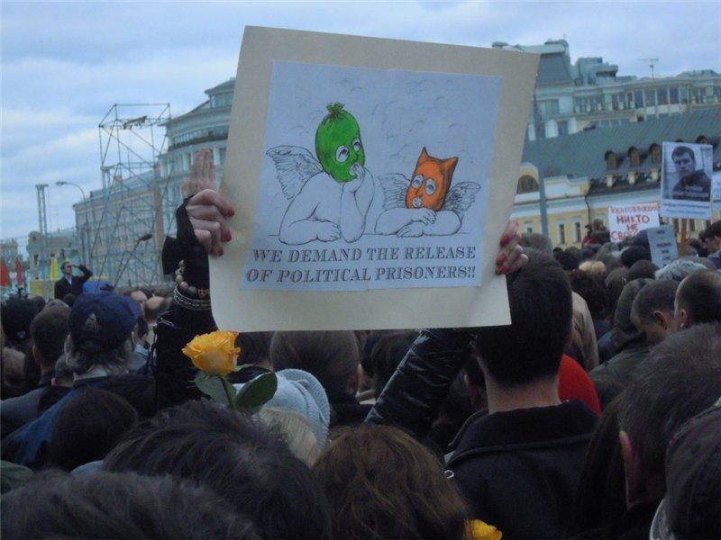

(Erschienen beim Grossen Thier mit einer fetten Verspätung, ist also z.T. nicht mehr aktuell, und dennoch…)
Es handelt sich hiermit gewissermaßen um einen Nachtrag zum Interview mit einem russischen Anarchisten aus der Moskauer Region (1), das wir vor ungefähr einem Jahr geführt haben. (2) Es gilt das Übliche: wer zwischen den Zeilen lesen kann, wird doppelt belohnt. Dafür sollte man erst die Zeilen selber lesen. Und vielleicht zur weiteren Klärung bzw. Verirrung auch diesen Text von uns: (3) – Anm. Ndejra
Vor allem: wie ist es gerade um die Protestbewegung in Russland bestellt?
Tja, die Prognosen der PessimistInnen, die den Protesten den baldigen Tod prophezeit haben, haben sich nicht bewahrheitet; auch die OptimistInnen, die neue Schübe unsrer friedlichen Revolution erwartet haben, irrten sich. Nach jener Geschichte mit Pussy Riot und nach der Verhaftung einer Reihe oppositioneller AktivistInnen, die sich öfters AnarchistInnen nannten, ist die Bewegung endgültig erlahmt. Wie ein Läufer, dem die Puste ausgegangen ist, aber er muss noch zum Finish laufen. Die Demonstrationen finden immer noch statt, aber nicht mehr so massenhaft und noch langweiliger. Die offiziellen Liberalen plappern immer noch ihre Losungen von fairen Wahlen nach, organisieren irgendwelche Primeries, um den „Koordinationsrat der Opposition“ auszuwählen, und diese Primeries scheinen nur sie selbst und den Kreml zu interessieren.
Die Systemlinken fangen an, nach einem Sozialstaat zu verlangen, unabhängige Gewerkschaften neigen immer mehr zum Marxismus (der Block der in der Bildung Beschäftigten verbannte beim letzten Marsch aus seinen Reihen ein paar anarchistischen Aspiranten und lud dafür die Kommunistische Partei mit sowjetischen Fahnen ein ); die „Autonome Aktion“ tummelt sich daneben und fordert kostenlose (verstaatlichte!) Bildung. Die Bevölkerung außerhalb großer Städte bleibt nach wie vor alleine mit ihren Problemen. Im Allgemeinen ist es eine ekelhafte Situation.
Was ist aber mit Pussy Riot?
O, das ist eine sehr kluge Operation des Kremls! Wunder dich nicht: der Auftritt dieser Frauen gestattete es, die Aufmerksamkeit aller AktivistInnen von stattfindenden sozialen Erschütterungen abzulenken. Stell dir nur vor: die Löhne sinken, Massenentlassugen, die Strafgesetzgebung wird verschärft – die Opposition aber preist die Taten von Pussy Riot. Natürlich, all diese Leute wurden wie Idioten angesehen… Nicht alle Protestierenden sind zu Fans von diesem Kollektiv geworden, aber die Mehrheit schon. Ich persönlich habe keinen Finger für Pussy Riot krumm gemacht.
Warum?
Ich glaube, das war eine geplante Operation. Während der Prozess gegen diese „Sängerinnen“ im Gange war, verhaftete man ohne großes Aufsehen mehr als 10 Menschen, einfache AktivistInnen, denen jetzt 5 Jahre Knast und mehr droht. In der Provinz wurde eine Anhängerin Limonows (Eduard Limonow, in bestimmten Milieus modischer linksradikaler Schriftsteller und Politiker) für 8 Jahre inhaftiert, nachdem man ihr ein paar Gram Herion zugesteckt hatte. Sie hat zwei Kinder draußen. Aber niemand machte Demos, um sie zu unterstützen.
Vielmehr, solange linke und rechte TeilnehmerInnen des „Millionenmarschs“ den Prozess gegen Pussy Riot diskutiert haben, erhöhte man Steuern und Dienstleistungspreise, was sich auf das Einkommen der Bevölkerung Russlands deutlich ausgewirkt hat. Und diese Frauen hat man zu 2 Jahren Freiheitsstrafe verurteilt, und das nicht einmal in sibirischen Lagern. Hierzulande gilt das als großes Glück: hier wird eineR aus tausend Beschuldigten frei gesprochen, die Mehrheit hält man unter grauenvollen Bedingungen in entfernten Kolonien (Lagern) für viele Jahre…

Was macht jetzt die linke und antiautoritäre Opposition?
Sie löste sich von den Massen und beschäftigt sich mit ihren eigenen Dingen. Versucht, Aktivitäten vorzutäuschen. Geht auf Demos, schreibt theoretische Artikel. Macht bei der Kampagne für kostenlose Bildung mit. Das ist Schwachsinn. Siehst du, die Situation ist halt folgende: wer zahlt, der bestellt auch die Musik (es gibt so einen Sinnspruch). Also statt nach der Abschaffung der staatlichen Kontrolle in der Bildung zu verlangen, bitten diese Herrschaften AktivistInnen, dass der Staat mehr Geld für Schulen und Unis ausgeben möchte. Und das war´s!
Meine Genossen und ich versuchten in der Hauptstadt ein anarchistisches Kultur- und Bildungszentrum zu organisieren, aber von Hunderten hiesiger AktivistInnen haben nur vier ihre Hilfe zugesagt. Als Resultat ist das Projekt eingegangen.
Perspektiven sehe ich keine. Der gesamten Opposition, sowohl Nawalnyj, als auch den Moskauer Autonomen, geht es um Selbstreklame und effektvolles Erscheinen bei den Demos. Manchmal zwar belustigen sie mich noch: entweder gestehen Mitglieder der russischen Sektion der IAA, dass sie die Polizei informieren, oder ein bekannter Vertreter der Autonomen Aktion ruft dazu auf, für die Wiederherstellung der Sowjetunion zu kämpfen – ansonsten sind wir alle, die außerhalb Moskaus leben, mit unseren Problemen uns selber überlassen. Soziologen warnen zwar: die Bevölkerung wird immer ärmer und erboster, das nächste Jahr kann in einer Explosion sozialer Wut führen, die dann niemand mehr kontrollieren könnte – weder Opposition, noch der Kreml.
Die Revolution ist tot. Lang lebe die Revolution!
Gibt es / gab es in Russland die „Occupy“-Bewegung?
Ja. Im Frühling letzten Jahres gingen ungenehmigte Demonstrationen in Moskau fließend in „Occupy Abaj“ über – das Lager wurde nach einem kasachischen Dichter Abaj genannt, denn die Protestirenden gründeten ihr Lager am Denkmal dieses interessanten Menschen. Das Lager existierte zwei Wochen lang, und die ganze Zeit liefen im Fernsehen Berichte darüber, wie die Protestierenden auf der Straße Müll liegen lassen und sich betrinken. Klar, war das nur eine gezielte Desinformation der Bevölkerung. In der Provinz war und bleibt das Fernsehen die einzige Nachrichtenquelle. Dann wurde das Lager auseinandergejagt…
Was soll ich sagen? – Ich habe mich im Lager engagiert. Würde nicht sagen, dass das gut oder nützlich war – die Protestierenden haben betont, dass sie keine sozialen Forderungen vertreten, sondern ihr Ziel war der Rücktritt des Präsidenten. Fünf Tage vor der Räumung übernahmen die Führung – ja, in Russland ist alles verkehrt, hier bekam das Lager eine Führung – Trotzkisten und die Liberalen. Z.Z. Versuchen die ersteren diese Idee wiederzubeleben, diesmal aber als irgend so ein Projekt ihrer Internationale (ich weiß nicht mehr, der wievielten). D.h. Gut, dass Menschen eine Plattform für freie Versammlungen und einen Ort bekommen haben, wo man wirklich ohne Zensur hat reden können, dafür war das Ziel und das theoretische Aspekt der russischen „Occupy“ falsch. (4)
Alexej Nawalnyj scheint in der deutschen Presse einer der Lieblingsfiguren der russischen Opposition zu sein. Wie kann man ihn charakterisieren?
Ich weiß gar nicht, was man über ihn im Westen schreibt – aber ich würde ihn als Liberal-Chauvinisten bezeichnen. Er arbeitete eine Weile lang im Stab des Gouverneurs im Kirower Gebiet, dann ging er in die Politik, bekämpfte die Korruption, gründete eine Stiftung. Nawalnyj ist Jurist, deswegen bringt ihm der Kampf gegen „undurchsichtige“ Geschäfte viel Geld, denn er findet öfters Geschäftsmachinationen im Auftrag konkurrierender Firmen.
Früher war er in der Demokratischen Partei, flog für chauvinistische Äußerungen raus, nahm vielmals an Demonstrationen für Deportation aller Kaukasier aus Moskau teil, glaubt, dass ausgerechnet sie die Mehrzahl aller Straftaten in Russland begehen. Er rief außerdem in einem Interview dazu auf, die Ukraine in Russland einzugliedern. Mit welchen Mitteln, hat er nicht erklärt, bestand aber darauf, dass das „russischer Boden“ sei. So ein ekelhafter Typ. Warum ist er in die Politik gegangen? Wahrscheinlich der Ruhm des ex-Präsidenten Medwedjew, der ja auch Rechtsanwalt ist, lässt ihn nicht ruhig schlafen.
Eine Art Nachtrag zum Nachtrag: Zu peinlichen Diskussionen über die Zusammenarbeit mit LGBT-Organisationen habe ich keine Fragen, ich glaube, in der Autonomen Aktion wird so was alle zwei Jahre diskutiert. Die Frage ist folgende: Wie siehst du diese jüngsten Proteste, den ungenehmigten Marsch der Solidarität mit den Inhaftierten? Rollt jetzt eine neue Repressionswelle übers Land, eine noch härtere? Was für Perspektiven, welche Prognosen?
Anfang Dezember diese Jahres sind Proteste in Russland fast auf das Niveau von Sommer/Herbst letzten Jahres zurückgekehrt: an Demos nehmen 1-2 Tausend Menschen teil, die periodischen Verhaftungen von AktivistInnen interessieren nur ihre Gleichgesinnten, die Protestaktionen werden wieder von Fahnen der Kommunisten dominiert. Natürlich hat die repressive Politik der Machthaber das Abflauten der Bewegung mit beeinflusst, aber das ist nicht nur sie allein.
Seit Monaten sprechen bekannte Blogger und VertreterInnen der gutverdienenden Schichten im Namen der Bewegung, und zwar immer lauter. Ausgerechnet sie schufen den so genannten „Koordinationsrat“, zu dem sogar Primeries stattfanden. Natürlich war das Ganze ein Bluff. In diesen „Rat“ sind neben dem Nationalisten Nawalnyj wenig bekannte Oligarchen, Journalisten und Bankiers gekommen. Also sah die Bevölkerung erneut, dass es so was wie faire Wahlen im Prinzip nicht gibt.
Eine große Niederlage war auch die Teilnahme von oppositionellen AktivistInnen an den Kommunalwahlen – die verloren haushoch und unsere Gerichte spielten auf der Seite der Machtpartei, als hätte jemand daran gezweifelt. Gleichzeitig versuchen Linke wie Rechte sich von Problemen der Provinz abzuschotten, indem sie sich als Gegenpart irgendeiner „konservativen Mehrheit“ darstellen. Besonders deutlich war das während des Prozesses gegen Pussy Riot. Ich neige zur Meinung, dass dieses dämliche Tanzen in der Kirche eine gelungene Provokation war, um nötige Gesetze durchzupeitschen und politisch aktive BürgerInnen von der Unterstützung politischer Gefangenen abzulenken.
Was unsere heiß geliebte Linke angeht (es ist kein Geheimnis, dass heutige AnarchistInen in Russland eher radikale SozialdemokratInnen sind), so hat ihre Präsenz bei jüngsten Massenaktionen nur noch mehr Probleme geschaffen. Der Großteil von ihnen vertrat z.B. Forderungen nach Nationalisierung der Industrie, Enteignung von Wohnungen (!), schleppte Lenin-Portraits mit. Anders gesagt, sie taten alles, um nicht aktuelle und sogar schädliche Losungen zum Hauptthema der Proteste zu machen. Die „Autonome Aktion“ verzichtete komplett auf schriftliche Agitation und kam mit der Losung „Anarchie – die Träume werden wahr“. Damit sorgte sie für viel Gelächter in der Demo, denn „die Träume werden wahr“ ist der Werbeslogan des staatseigenen Korporation Gasprom. Aktuell in der Anarcho-Szene der Streit über die Zusammenarbeit mit LGBT und die komplett beknackten Konzepten der „Wiederherstellung der UdSSR nach libertären Prinzipien“. Obwohl manche GenossInnen nützliche Dinge machen, 20 bis 30 Leute vielleicht.
Die russische Sektion der IAA macht sich weiterhin lächerlich: bei einem Verhör neulich hat eine Person munter die echten Namen von ehemaligen GenossInnen (vor einigen Jahren hat sich dieser Sumpf gespalten) und ihre Nicknames im Internet ausgeplaudert. Die hat zwar niemand so besonders verheimlicht, aber solche Offenherzigkeit gegenüber der Polizei kam schon sehr überraschend. (5) (6)
Wegen Repressionen – was soll ich sagen – verhaftet werden AktivistInnen jedes Jahr, nur jetzt versucht man daraus eine Art mediales Ereignis zu machen. Die staatseigenen Fernsehsender (andere haben wir nicht) zeigen Spezialreportagen darüber, dass die Opposition von georgischen Bürokraten gesponsert wird. Also sucht jetzt die Polizei eifrig nach einer Auslandsspur in den Straßenschlachten mit den OMON-Einheiten vom 6. Mai. Ich würde nicht sagen, dass die Repressionen massiver werden, nur werden Verhaftungen und Räumungen jetzt landesweit durchgeführt.
Irgendwelche Prognosen für Morgen, für das nächste Jahr wären zwar möglich – aber ich will sie nicht machen. Das Gefühl der Enttäuschung ist noch sehr groß: denn fast bis zum Frühling hofften wir alle – Hunderte von Tausenden Menschen, die auf Demos gingen, die Millionen, die mit uns sympathisiert haben – wir alle haben auf Veränderungen gehofft. Alles, was jetzt bleibt, ist sich noch ein mal die Fotos von letztjährigen Demos anzuschauen und sich an das unvergleichliche Gefühl erinnern, dass die Veränderungen so nah waren.
Fussnoten:
5) http://vivalafora.livejournal.com/278162.html
2) http://bildungdiskutieren.blogsport.de/2011/12/29/es-einnert-mich-an-februar-in-libyen/
1) http://mosreg.anarhist.org/
6) http://anarchism-ru.livejournal.com/1368370.html
4) Theoretisch falsch… Tja, für die Occupy-Abaj durften waschechte Nazis den Security-Dienst stellen. Sieht man, wenn man sich z.B. durch http://anatrrra.livejournal.com/ durchklickt.